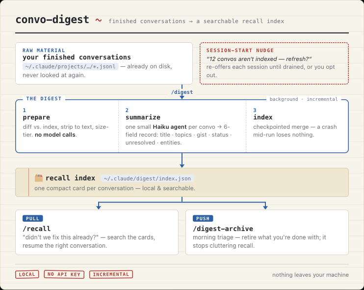

Convo Digest
# dev tooling + cost-aware summarization

Convo Digest is a Claude Code plugin, now live and installable from the marketplace, that turns your finished conversations into a searchable recall index, so you (and Claude) can find past work when you start something new and triage what you're done with. It scratches my own itch: picking up relevant conversations from previous days without scrolling forever.
Each conversation is summarized into a compact six-field record (title, topics, gist, status, unresolved, key entities). The work runs as a background workflow orchestrating small read-only agents on the cheap Haiku model, so the interactive session stays free, and large conversations are downsampled to a tail-weighted view and expanded on demand under a token budget, so no single summary blows the context. Everything is incremental and checkpointed: only changed conversations get re-summarized.
It runs entirely locally on your Claude Code subscription: no API key, and nothing leaves the machine. A small project, but a real exercise in balancing product quality against time and cost.
// what I learned
- Keeping summarization cheap (small Haiku agents in a background workflow) is what makes a dev tool pleasant to run rather than costly.
- Downsampling big conversations to a tail-weighted view and expanding on demand under a token budget keeps any single summary from blowing the context.
- A SessionStart hook can only reach you by relaying through the model, so I made the nudge self-healing: it keeps re-surfacing until the backlog is cleared or you opt out.